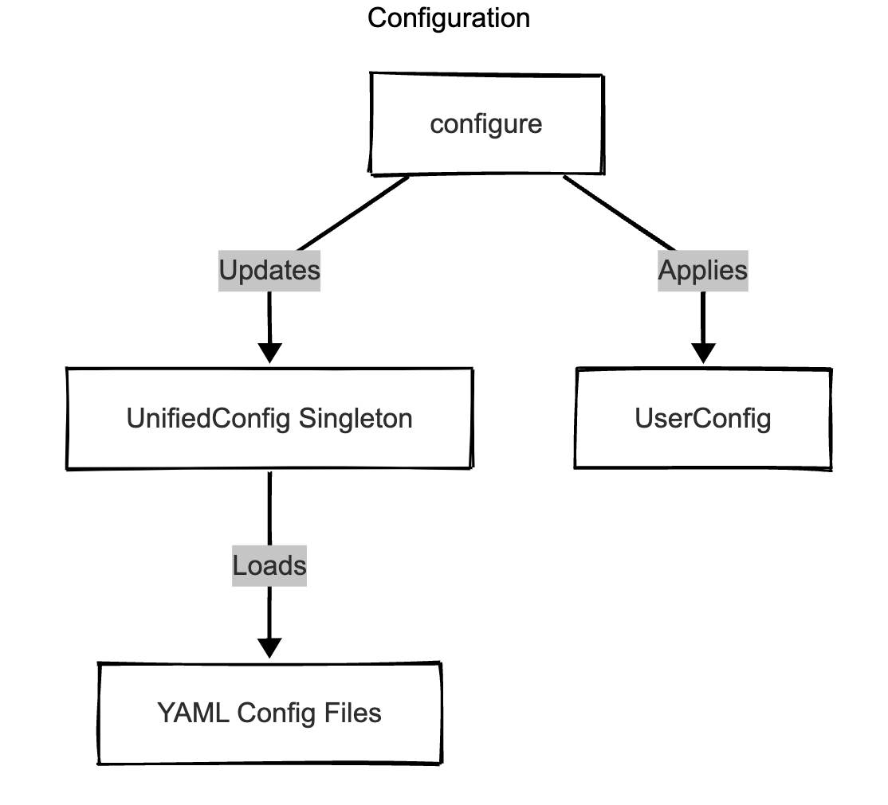
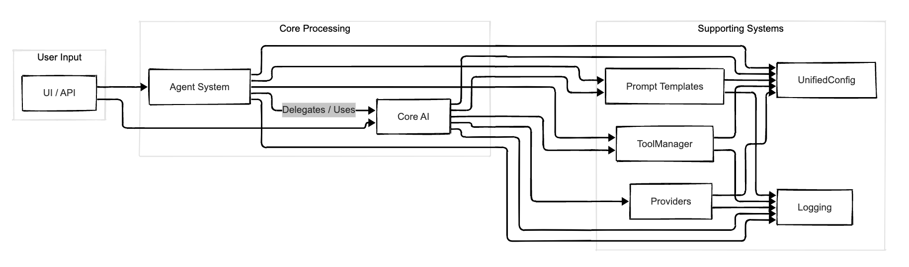

Agentic-AI Architecture
This document describes the architecture of the Agentic-AI framework, focusing on the core design principles and component relationships.
Overview
Agentic-AI is a modular framework for building AI applications with integrated tool usage and agent-based processing capabilities. The architecture emphasizes:
- Separation of Concerns: Each component has a clear, focused responsibility (e.g., configuration, core AI logic, tool execution, agent coordination).
- Interface-Based Design: Components interact through well-defined interfaces (
AIInterface,ProviderInterface,AgentInterface, etc.) where applicable. - Configuration Management: A centralized
UnifiedConfigsystem loads settings from modular YAML files, allowing overrides via code, files, or environment variables. - Dependency Injection/Access: Key services like configuration (
UnifiedConfig), logging (LoggerFactory), and potentiallyToolManagerorPromptTemplateare often accessed via singletons or passed during initialization. - Standardized Error Handling: A hierarchy of exceptions (
AIFrameworkError,AIConfigError,AIProviderError, etc.) and anErrorHandlerfacilitate consistent error management.
Core Components
-
Configuration (
src/config): Manages all settings. -
UnifiedConfig: Singleton providing access to merged configuration from YAML files (models.yml,providers.yml,agents.yml,tools.yml,use_cases.yml) and overrides. UserConfig: Represents user-provided overrides.-
configure(): Function to apply user overrides. -
Core AI (
src/core): Handles direct interaction with LLMs. -
AIBase: Foundational class managing provider selection (viaProviderFactory), basic request/response handling, and conversation history (ConversationManager). ToolEnabledAI: ExtendsAIBaseto manage the tool-calling loop, interacting withToolManagerand the provider. Retrieves raw tool execution history (get_tool_history).ProviderFactory: Creates instances of specific provider clients.providers/: Contains implementations for different AI providers (OpenAI, Anthropic, etc.), inheriting fromBaseProviderand implementingProviderInterface.BaseProvider: Base class for providers, handling common logic like parameter processing and tool formatting viaProviderToolHandler.ProviderToolHandler: Helper class within providers for formatting tool definitions and results.FrameworkMessageFormatter: Utility class used by components likeCoordinatorto format internal framework events (tool results, errors) into user-readable strings.
-
ConversationManager: Tracks message history for AI interactions. -
Tools (
src/tools): Manages function/API calling capabilities. -
ToolManager: Central service coordinating tool execution (execute_tool) usingToolExecutorand retrieving tool definitions fromToolRegistry. Does not handle tool finding. ToolRegistry: LoadsToolDefinitionobjects from configuration, stores them, and provides them. Handles provider-specific formatting logic.ToolExecutor: Executes the actual tool functions with timeout/retry logic.-
models: DefinesToolDefinition,ToolCall,ToolResult. -
Tools (
src/tools): Manages function calling (internal tools) and external API interactions (MCP tools). -
ToolManager: Central service coordinating tool discovery, formatting, and asynchronous execution (async def execute_tool). Loads definitions fromToolRegistry(internal) andMCPClientManager(MCP). Dispatches execution calls toToolExecutororMCPClientManagerbased on toolsource. ToolRegistry: Loads, validates, and stores internal tool definitions (source='internal') fromtools.yml. Provides access to these definitions.MCPClientManager: Loads MCP server configurations and declared MCP tool definitions (source='mcp') frommcp.yml. ManagesClientSessionconnections to external MCP servers and handles MCPcall_toolrequests.ToolExecutor: Executes only internal Python tool functions (source='internal') with asyncio-based timeout/retry logic.ToolStatsManager: Tracks usage statistics for all tools.-
models: DefinesToolDefinition,ToolCall,ToolResult. -
Agents (
src/agents): Enables specialized processing and workflows. -
Coordinator: Central agent orchestrating request handling.- Uses
RequestAnalyzerto classify intent (e.g., META, TASK, IMAGE_GENERATION). - For specific intents like META or IMAGE_GENERATION, it may handle the request directly (e.g., fetching info or directly calling a tool via
ToolManager). - For other intents (TASK, QUESTION, UNKNOWN), it typically delegates to specialized agents selected via
AgentFactory. - Checks delegated agent response metadata for
tool_historyand usesFrameworkMessageFormatterto present results/errors.
- Uses
BaseAgent: Abstract base class for all agents. If usingToolEnabledAI, callsprocess_promptand attaches rawtool_historyto response metadata.AgentFactory: Creates agent instances usingAgentRegistry.AgentRegistry: Maps agent IDs to agent classes.-
Specialized Agents (e.g.,
ListenerAgent,ChatAgent,ToolFinderAgent): Implement specific functionalities. -
Prompts (
src/prompts): Manages reusable prompt templates. -
PromptTemplate: Service loading templates from YAML files, handling versioning and variable substitution. -
Utilities (
src/utils): Provides common functionalities. -
LoggerFactory: Creates configured logger instances. -
Error Handling (
src/exceptions.py): Defines custom exceptions and theErrorHandler. -
UI (
src/ui): Provides user interfaces. SimpleChatUI: A Gradio-based chat interface interacting with theCoordinator.
Component Relationships Diagrams
These diagrams illustrate the key relationships and dependencies between the major components.
1. Configuration System

graph TD
subgraph Configuration
UnifiedConfig[UnifiedConfig Singleton]
YAMLFiles[YAML Config Files]
ConfigureFunc["configure()"]
UserConfig[UserConfig]
UnifiedConfig -- Loads --> YAMLFiles
ConfigureFunc -- Applies --> UserConfig
ConfigureFunc -- Updates --> UnifiedConfig
end
subgraph Components Using Config
AIBase
ToolEnabledAI
Coordinator
ToolManager
ProviderImplementations
BaseAgent
end
AIBase --> UnifiedConfig
ToolEnabledAI --> UnifiedConfig
Coordinator --> UnifiedConfig
ToolManager --> UnifiedConfig
ProviderImplementations --> UnifiedConfig
BaseAgent --> UnifiedConfig2. Core AI System
graph TD
subgraph Core AI
ToolEnabledAI[ToolEnabledAI]
AIBase[AIBase]
ProviderFactory[ProviderFactory]
ProviderImplementations[Provider Implementations]
ConversationManager[ConversationManager]
PromptTemplateSvc[PromptTemplate Service]
ToolEnabledAI -- Inherits --> AIBase
AIBase --> ProviderFactory
AIBase --> ConversationManager
AIBase --> PromptTemplateSvc
ProviderFactory --> ProviderImplementations
end
subgraph Dependencies
UnifiedConfig[UnifiedConfig Singleton]
ToolManager[ToolManager]
LoggerFactory[LoggerFactory Singleton]
end
ToolEnabledAI --> UnifiedConfig
ToolEnabledAI --> ToolManager
ToolEnabledAI --> LoggerFactory
AIBase --> UnifiedConfig
AIBase --> LoggerFactory
ProviderImplementations --> UnifiedConfig
PromptTemplateSvc --> LoggerFactory
BaseProvider --> ProviderToolHandler
BaseProvider --> UnifiedConfig
BaseProvider --> LoggerFactoryFlow Note: ToolEnabledAI passes internal tool names to BaseProvider. BaseProvider uses its ProviderToolHandler (which uses ToolRegistry) to format these names into the provider-specific API structure.
3. Tool Subsystem
graph TD
subgraph "Users Of Tools"
ToolEnabledAI -- "Calls Execute (await)" --> ToolManager
BaseAgent -- "Calls Execute (await)" --> ToolManager
end
subgraph "Tools Subsystem"
ToolManager -- "Gets All Definitions" --> ToolRegistry["ToolRegistry (Internal Tools)"]
ToolManager -- "Gets All Definitions" --> MCPClientManager["MCPClientManager (MCP Tools)"]
ToolManager -- "Dispatches" --> ToolExecutor["ToolExecutor (Internal)"]
ToolManager -- "Dispatches" --> MCPClientManager
ToolManager -- "Records Stats" --> ToolStatsManager
ToolExecutor -- "Returns (awaitable)" --> ToolResult["ToolResult Model"]
MCPClientManager -- "Returns MCP Response" --> ToolManager
ToolRegistry -- "Stores/Provides" --> InternalToolDef["ToolDefinition (source='internal')"]
MCPClientManager -- "Stores/Provides" --> MCPToolDef["ToolDefinition (source='mcp')"]
ToolStatsManager -- "Persists" --> StatsFile["Tool Stats JSON"]
UnifiedConfigRef["UnifiedConfig"] -- "Provides Config" --> ToolRegistry
UnifiedConfigRef["UnifiedConfig"] -- "Provides Config" --> MCPClientManager
UnifiedConfigRef["UnifiedConfig"] -- "Provides Config" --> ToolExecutor
UnifiedConfigRef["UnifiedConfig"] -- "Provides Config" --> ToolStatsManager
ToolsYAML["tools.yml"] -- "Read By" --> UnifiedConfigRef
MCPYAML["mcp.yml"] -- "Read By" --> UnifiedConfigRef
end
subgraph "Dependencies"
ToolManager -- "Uses" --> LoggerFactory["LoggerFactory"]
ToolRegistry -- "Uses" --> LoggerFactory
MCPClientManager -- "Uses" --> LoggerFactory
ToolExecutor -- "Uses" --> LoggerFactory
ToolStatsManager -- "Uses" --> LoggerFactory
ToolManager -- "Uses" --> UnifiedConfigRef
end
ToolEnabledAI -- "Gets Formatted Tools" --> ToolManager
style ToolManager fill:#f9f,stroke:#333,stroke-width:2px
style ToolExecutor fill:#fdf,stroke:#333,stroke-width:1px
style MCPClientManager fill:#fdf,stroke:#333,stroke-width:1px
style ToolEnabledAI fill:#ccf,stroke:#333,stroke-width:2px4. Agent System
graph TD
subgraph "Agents"
Coordinator["Coordinator"]
AgentFactory["AgentFactory"]
AgentRegistry["AgentRegistry"]
BaseAgent["BaseAgent"]
ListenerAgent["ListenerAgent"]
ChatAgent["ChatAgent"]
ToolFinderAgent["ToolFinderAgent"]
OtherAgents["..."]
RequestAnalyzer["Request Analyzer"]
Coordinator -- "Inherits" --> BaseAgent
ListenerAgent -- "Inherits" --> BaseAgent
ChatAgent -- "Inherits" --> BaseAgent
ToolFinderAgent -- "Inherits" --> BaseAgent
OtherAgents -- "Inherits" --> BaseAgent
Coordinator -- "Uses" --> AgentFactory
Coordinator -- "Uses" --> RequestAnalyzer
Coordinator -- "Uses" --> FrameworkMessageFormatter
Coordinator -- "Calls (Direct Dispatch)" --> ToolManagerRef["ToolManager"]
AgentFactory -- "Uses" --> AgentRegistry
AgentFactory -- "Creates" --> BaseAgent
RequestAnalyzer -- "Uses" --> AgentRegistry
end
subgraph "Dependencies"
UnifiedConfig["UnifiedConfig Singleton"]
ToolManagerRef
LoggerFactory["LoggerFactory Singleton"]
AIBase["AIBase"]
end
BaseAgent --> UnifiedConfig
BaseAgent --> ToolManagerRef
BaseAgent --> LoggerFactory
BaseAgent --> AIBase
Coordinator -- "Coordinator might directly use" --> ToolManagerRef5. High-Level Interactions

graph LR
subgraph User Input
UI[UI / API]
end
subgraph Core Processing
Coordinator[Agent System (Coordinator)]
ToolEnabledAI[Core AI (ToolEnabledAI)]
end
subgraph Supporting Systems
Config[Configuration (UnifiedConfig)]
Tools[Tool Subsystem (ToolManager)]
Prompts[Prompt Templates]
Logging[Logging]
Providers[Providers]
end
UI --> Coordinator
UI --> ToolEnabledAI # Direct AI calls possible
Coordinator -- Delegates / Uses --> ToolEnabledAI
Coordinator --> Tools
ToolEnabledAI --> Tools
ToolEnabledAI --> Providers
Coordinator --> Config
ToolEnabledAI --> Config
Tools --> Config
Providers --> Config
Prompts --> Config
Coordinator --> Prompts
ToolEnabledAI --> Prompts
Coordinator --> Logging
ToolEnabledAI --> Logging
Tools --> Logging
Providers --> Logging(Note: These diagrams illustrate major dependencies and interactions. Not all minor connections are shown for clarity.)
Key Architectural Improvements
- Unified Configuration: Replaced disparate config managers with a single
UnifiedConfigsingleton accessing modular YAML files, simplifying configuration access. - Standardized Provider Interface:
BaseProviderandProviderInterfaceenforce a standard structure for provider implementations, returning a standardizedProviderResponseobject to simplify core AI logic. - Refined Agent System: Centralized orchestration logic in the
Coordinatoragent, supported byAgentFactory,AgentRegistry, andRequestAnalyzer, providing a clearer structure than earlier multi-agent concepts. - Focused Tool Subsystem:
ToolManager,ToolRegistry,ToolExecutor, andToolStatsManagerprovide clear responsibilities for tool definition, formatting, execution, and usage statistics tracking, integrated seamlessly withToolEnabledAI. - Simplified Core AI:
AIBasehandles fundamental LLM interaction, whileToolEnabledAIspecifically layers tool-calling orchestration on top. - YAML-based Prompt Templates: Standardized on the
PromptTemplateservice loading versioned templates from YAML files as the primary prompt management method. - Consistent Error Handling: Implemented a clear exception hierarchy and
ErrorHandlerfor uniform error management.
Usage Example
from src.core import ToolEnabledAI
from src.agents import Coordinator
from src.config import configure, UseCasePreset
from src.tools import ToolDefinition, ToolManager # Assuming definition exists
# --- Configuration (Optional) ---
# Configure framework settings if defaults aren't suitable
# configure(model="gpt-4o", use_case=UseCasePreset.CODING)
# --- Direct AI Usage with Tools ---
print("\n--- Using ToolEnabledAI Directly ---")
# Create a ToolEnabledAI instance (uses configured model)
ai = ToolEnabledAI()
# Tools are typically loaded via configuration (tools.yml)
# If manual registration is needed (less common):
# tool_manager = ToolManager() # Get or create manager
# weather_tool_def = ToolDefinition(...) # Define get_weather
# tool_manager.register_tool("get_weather", weather_tool_def)
# ai = ToolEnabledAI(tool_manager=tool_manager)
# Make a request - process_prompt handles the tool loop
response_ai = ai.process_prompt("What is the weather like in London?")
print(f"AI Response: {response_ai}")
# --- Agent-Based Usage via Coordinator ---
print("\n--- Using Coordinator Agent ---")
# Create a Coordinator instance (uses default dependencies & config)
coordinator = Coordinator()
# Prepare a request for the coordinator
request_data = {
"prompt": "Summarize the main points of the latest Agentic AI documentation updates.",
# Add other relevant info like user_id, session_id if needed by agents
}
# Process the request through the coordinator
response_coord = coordinator.process_request(request_data)
# Print the final content from the coordinator's response
print(f"Coordinator Response: {response_coord.get('content')}")